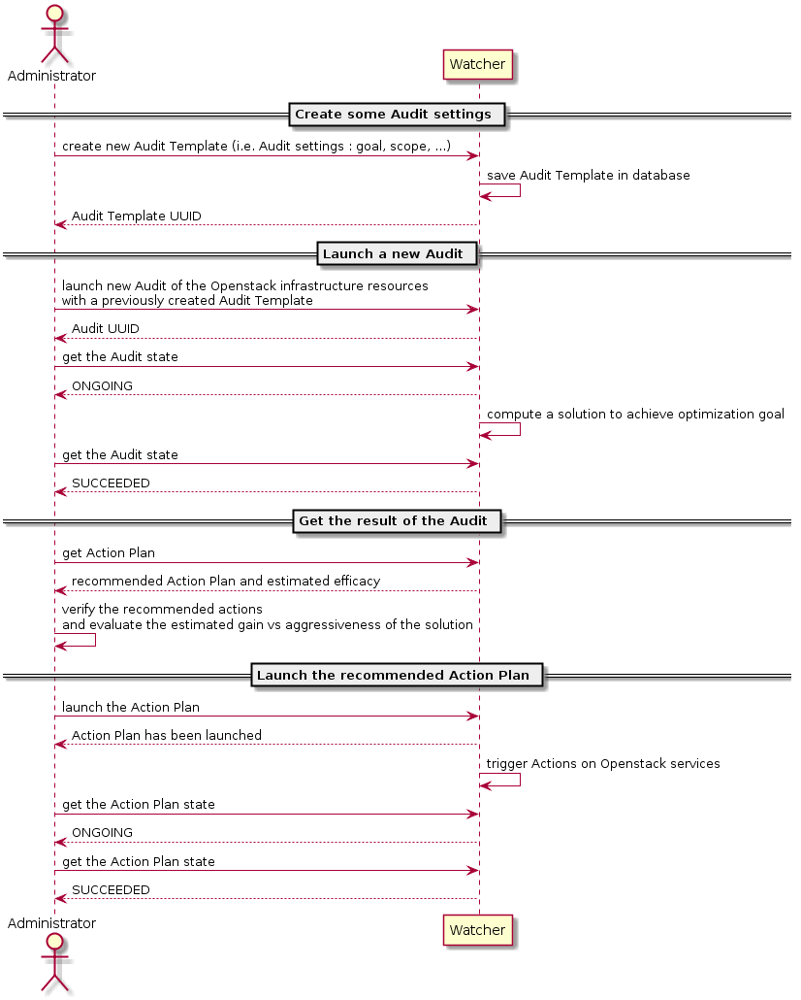

Watcher User Guide¶
See the architecture page for an architectural overview of the different components of Watcher and how they fit together.
In this guide we’re going to take you through the fundamentals of using Watcher.
The following diagram shows the main interactions between the Administrator and the Watcher system:
{kind=link}
Getting started with Watcher¶
This guide assumes you have a working installation of Watcher. If you get “watcher: command not found” you may have to verify your installation. Please refer to the installation guide. In order to use Watcher, you have to configure your credentials suitable for watcher command-line tools.
You can interact with Watcher either by using our dedicated Watcher CLI
named watcher, or by using the OpenStack CLI openstack.
If you want to deploy Watcher in Horizon, please refer to the Watcher Horizon plugin installation guide.
Seeing what the Watcher CLI can do ?¶
We can see all of the commands available with Watcher CLI by running the watcher binary without options.
$ watcher help
or:
$ openstack help optimize
How do I run an audit of my cluster ?¶
First, you need to find the goal you want to achieve:
$ watcher goal list
or:
$ openstack optimize goal list
Note
If you get “You must provide a username via either –os-username or via env[OS_USERNAME]” you may have to verify your credentials.
Then, you can create an audit template. An audit template defines an optimization goal to achieve (i.e. the settings of your audit).
$ watcher audittemplate create my_first_audit_template <your_goal>
or:
$ openstack optimize audittemplate create my_first_audit_template <your_goal>
Although optional, you may want to actually set a specific strategy for your audit template. If so, you may can search of its UUID or name using the following command:
$ watcher strategy list --goal <your_goal_uuid_or_name>
or:
$ openstack optimize strategy list --goal <your_goal_uuid_or_name>
You can use the following command to check strategy details including which parameters of which format it supports:
$ watcher strategy show <your_strategy>
or:
$ openstack optimize strategy show <your_strategy>
The command to create your audit template would then be:
$ watcher audittemplate create my_first_audit_template <your_goal> \
--strategy <your_strategy>
or:
$ openstack optimize audittemplate create my_first_audit_template <your_goal> \
--strategy <your_strategy>
Then, you can create an audit. An audit is a request for optimizing your cluster depending on the specified goal.
You can launch an audit on your cluster by referencing the audit template (i.e. the settings of your audit) that you want to use.
- Get the audit template UUID or name:
$ watcher audittemplate list
or:
$ openstack optimize audittemplate list
- Start an audit based on this audit template settings:
$ watcher audit create -a <your_audit_template>
or:
$ openstack optimize audit create -a <your_audit_template>
If your_audit_template was created by –strategy <your_strategy>, and it defines some parameters (command watcher strategy show to check parameters format), your can append -p to input required parameters:
$ watcher audit create -a <your_audit_template> \
-p <your_strategy_para1>=5.5 -p <your_strategy_para2>=hi
or:
$ openstack optimize audit create -a <your_audit_template> \
-p <your_strategy_para1>=5.5 -p <your_strategy_para2>=hi
Input parameter could cause audit creation failure, when:
- no predefined strategy for audit template
- no parameters spec in predefined strategy
- input parameters don’t comply with spec
Watcher service will compute an Action Plan
composed of a list of potential optimization actions
(instance migration, disabling of a compute node, ...) according to the
goal to achieve. You can see all of the goals
available in section [watcher_strategies] of the Watcher service
configuration file.
- Wait until the Watcher audit has produced a new action plan, and get it:
$ watcher actionplan list --audit <the_audit_uuid>
or:
$ openstack optimize actionplan list --audit <the_audit_uuid>
- Have a look on the list of optimization actions contained in this new action plan:
$ watcher action list --action-plan <the_action_plan_uuid>
or:
$ openstack optimize action list --action-plan <the_action_plan_uuid>
Once you have learned how to create an Action Plan, it’s time to go further by applying it to your cluster:
- Execute the action plan:
$ watcher actionplan start <the_action_plan_uuid>
or:
$ openstack optimize actionplan start <the_action_plan_uuid>
You can follow the states of the actions by periodically calling:
$ watcher action list
or:
$ openstack optimize action list
You can also obtain more detailed information about a specific action:
$ watcher action show <the_action_uuid>
or:
$ openstack optimize action show <the_action_uuid>